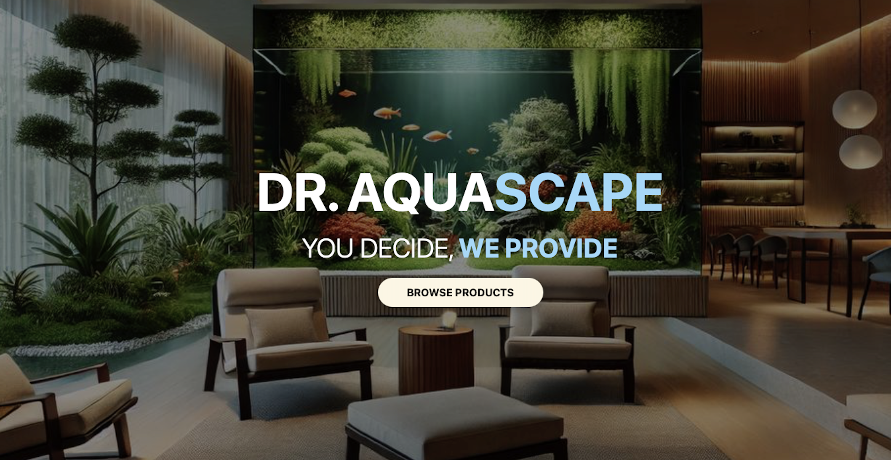
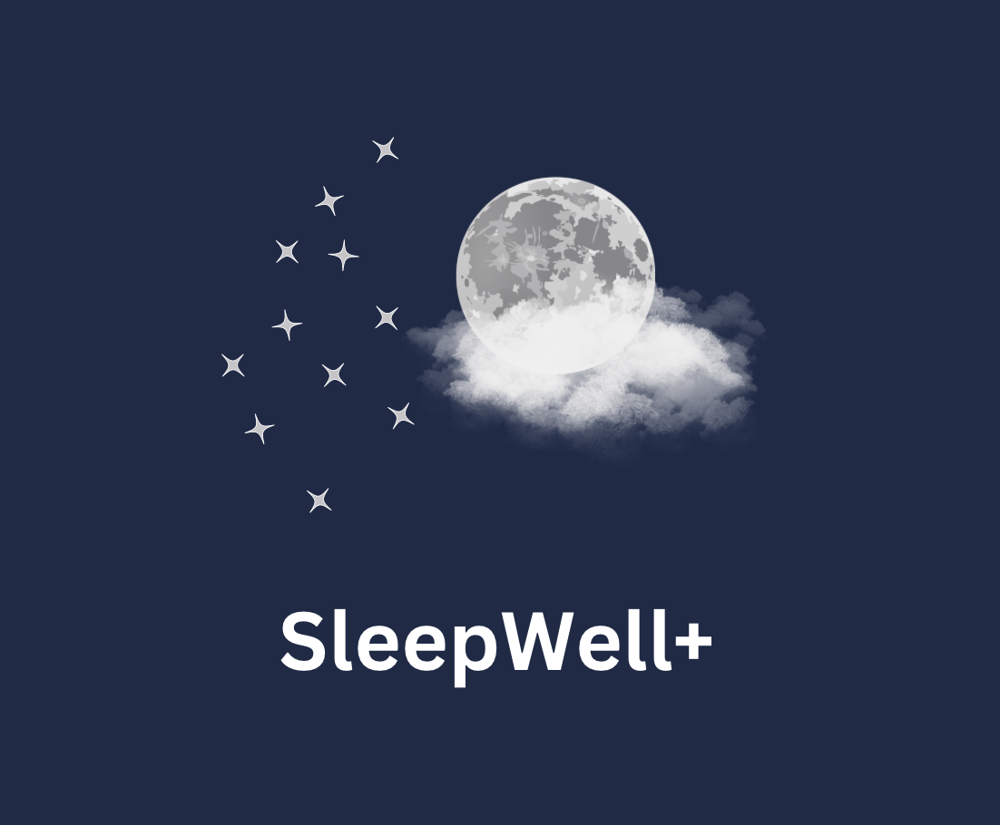
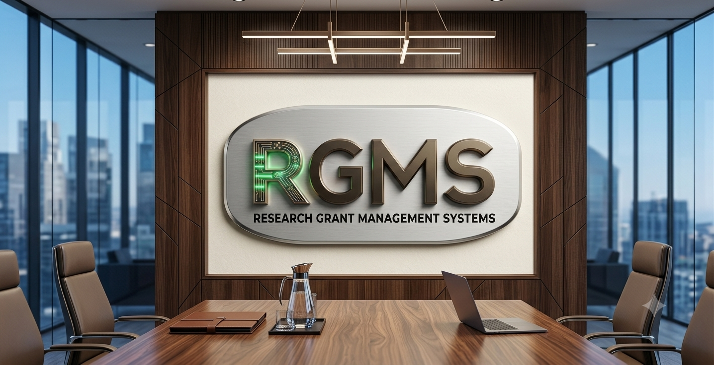

×

Hello!
I am a First Class Honours Software Engineering graduate with a strong passion for building clean, efficient, and user-friendly web applications. I enjoy turning ideas into functional systems that solve real-world problems.
I have hands-on experience in full-stack web development, system design, database management, testing and software documentation through academic and real project experience.
Kuala Lumpur | WP. Putrajaya | Selangor
Open to Work
Contact MeBuilt through coursework, personal projects, internship experience and my Final Year Project.
📍 Kolej MARA Kuala Nerang (KMKN)
📍 Universiti Tenaga Nasional (UNITEN)
📍 Two Q Alliance Sdn Bhd
A collection of software projects I've designed and developed, showcasing full-stack development, software engineering practices, UI/UX design, testing and problem solving.

Designed and developed a complete Laravel e-commerce system for a real client featuring customer ordering, payment, ratings and administrative management.
View Case Study →
Mobile application that helps users build healthier sleeping habits through reports, reminders and sleep scoring.
View Case Study →
Research grant management platform developed to help universities monitor research grants, milestones, and academician information through role-based access and centralized administration.
View Case Study →I am currently seeking graduate opportunities in software engineering. While my primary focus is software development, I am also open to roles such as system analyst, QA engineer, or software tester. I enjoy building clean and user-friendly applications, and I am eager to contribute to a team where I can grow and add value.